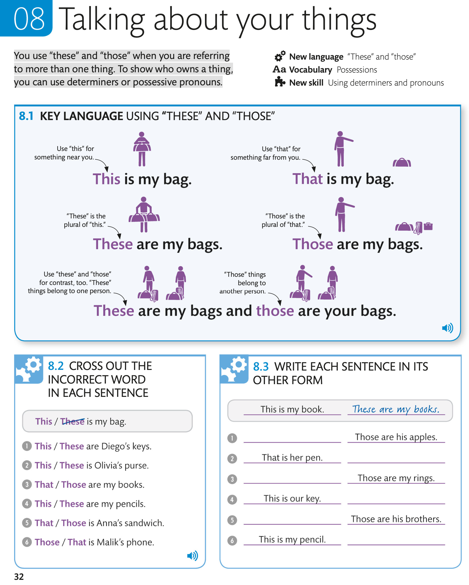
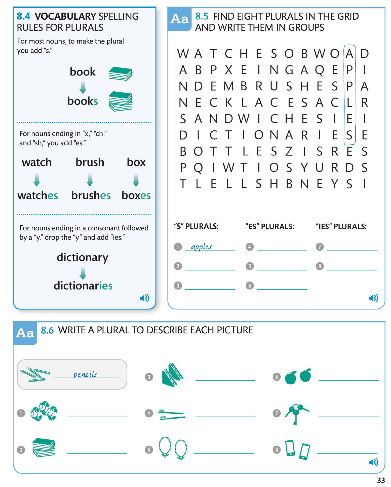
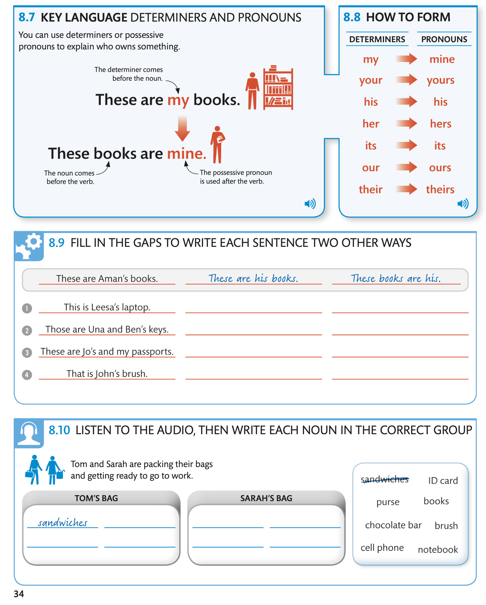
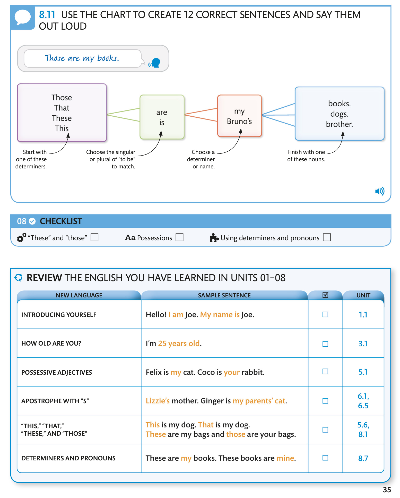

Talking about your things / Говоря о своих вещах
You use “these” and “those” when you are referring to more than one thing. To show who owns a thing, you can use determiners or possessive pronouns.
Вы используете «эти» и «те», когда имеете в виду более чем одну вещь. Чтобы показать, кому принадлежит вещь, можно использовать определители или притяжательные местоимения.

8.1 KEY LANGUAGE USING “THESE” AND “THOSE”
8.2 CROSS OUT THE INCORRECT WORD IN EACH SENTENCE / ВЫЧЕРКНИТЕ НЕПРАВИЛЬНОЕ СЛОВО В КАЖДОМ ПРЕДЛОЖЕНИИ AUDIO
8.3 WRITE EACH SENTENCE IN ITS OTHER FORM / НАПИШИТЕ КАЖДОЕ ПРЕДЛОЖЕНИЕ В ДРУГОЙ ФОРМЕ

8.4 VOCABULARY SPELLING RULES FOR PLURALS / ПРАВИЛА ПРАВОПИСАНИЯ СЛОВА МНОЖЕСТВЕННОГО числа
For most nouns, to make the plural you add “s.” AUDIO 8.5 FIND EIGHT PLURALS IN THE GRID AND WRITE THEM IN GROUPS AUDIO 8.6 WRITE A PLURAL TO DESCRIBE EACH PICTURE / НАПИШИТЕ МНОЖЕСТВЕННОЕ ОПИСАНИЕ КАЖДОЙ КАРТИНКИ.AUDIO
For most nouns, to make the plural you add “s.” AUDIO 8.5 FIND EIGHT PLURALS IN THE GRID AND WRITE THEM IN GROUPS AUDIO 8.6 WRITE A PLURAL TO DESCRIBE EACH PICTURE / НАПИШИТЕ МНОЖЕСТВЕННОЕ ОПИСАНИЕ КАЖДОЙ КАРТИНКИ.AUDIO

8.7 KEY LANGUAGE DETERMINERS AND PRONOUNS / КЛЮЧЕВЫЕ ЯЗЫКОВЫЕ ОПРЕДЕЛИТЕЛИ И МЕСТОИМЕНИЯ
8.8 HOW TO FORM
8.9 FILL IN THE GAPS TO WRITE EACH SENTENCE TWO OTHER WAYS / НАПИШИТЕ МНОЖЕСТВЕННОЕ ОПИСАНИЕ КАЖДОЙ КАРТИНКИ. / ЗАПОЛНИТЕ ПРОПУСКИ, ЧТОБЫ НАПИСАТЬ КАЖДОЕ ПРЕДЛОЖЕНИЕ ДВА ДРУГИХ СПОСОБА
8.10 LISTEN TO THE AUDIO, THEN WRITE EACH NOUN IN THE CORRECT GROUP / ПРОСЛУШАЙТЕ АУДИО, ЗАТЕМ НАПИШИТЕ КАЖДОЕ СУЩЕСТВИТЕЛЬНОЕ В ПРАВИЛЬНОЙ ГРУППЕ.
Tom and Sarah are packing their bags and getting ready to go to work. / Том и Сара пакуют чемоданы и собираются идти на работу.

8.11 USE THE CHART TO CREATE 12 CORRECT SENTENCES AND SAY THEM OUT LOUD / ИСПОЛЬЗУЙТЕ ТАБЛИЦУ, ЧТОБЫ СОСТАВИТЬ 12 ПРАВИЛЬНЫХ ПРЕДЛОЖЕНИЙ, И ПРОИЗНЕСИТЕ ИХ В ГРОМКО.